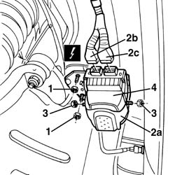

5580E46 antitheft device ecu / siren unit r + r
- Path
- Procedures > 55 ELECTRICAL EQUIPMENT > 5580 SPECIAL ACCESSORIES > 5580E anti-theft device > 5580E46 antitheft device ecu / siren unit r + r
- Kind
- repair procedure (removal / refitting; the operation number is the code)
- Applies to
- all engines; all production periods
- Interactive page
- https://sloeber94.github.io/elrnDB-a156/en/#/3238549
Applies to: all engines; all production periods
 Removing
Removing
 Refitting
Refitting7055B42 Additional FRONT WHEEL ARCH (one), left or right - R.R.
1. Unscrew the control unit bracket retaining nuts.
2. Move control unit bracket (2a) and disconnect electrical connections (2b, 2c).
 | Name | Connector |
|---|---|---|
2a | Alarm control unit |
| Name | Connector |
|---|---|---|
2b | Alarm control unit |
3. Unscrew the nuts retaining the control unit to the bracket.
4. Recover the control unit by taking off its bracket.

Applies to: all engines; all production periods
Refitting
RemovingCheck that the control unit is undamaged.
Place the control unit on the bracket and secure using the nuts.
Connect the electrical connections.
Fit the bracket and secure using the nuts.
7055B42 Additional FRONT WHEEL ARCH (one), left or right - R.R.
Check the operation of the system using the Examiner or another tester.
Topics linked from this page (3)
- 7055B42 Additional FRONT WHEEL ARCH (one), left or right - R.R.
- M30A Alarm control unit ( FRONT )
- M30B Alarm control unit ( FRONT )